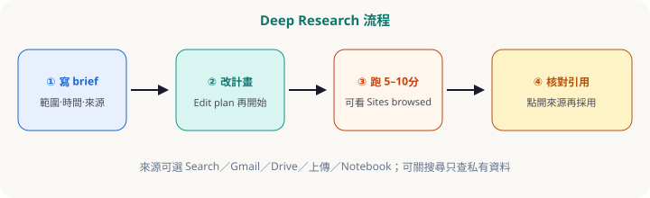

第三章 · Deep Research
先改計畫，再按開始
Deep Research 適合「要掃很多分頁」的調查。流程：寫 brief → 看計畫 → Edit plan → Start → 約 5–10 分鐘 → 核對引用。可選來源，也可關掉 Google 搜尋只查私有資料。
流程圖

從工具列開 Deep Research
在 gemini.google.com 輸入框附近選 Deep Research（位置可能隨改版移動）。
選來源（可選）
預設含 Google Search。也可加入 Gmail、Drive、上傳檔、Notebook。若只要內部材料，可取消勾選 Google 搜尋。
寫 brief：收窄範圍
寫清目的、時間窗、地區／產業、偏好來源、輸出結構。範圍愈窄，報告愈有用。
編輯計畫再開始
Gemini 會先給研究計畫。用自然語言改（「加上成本比較」「去掉十年前資料」），再按開始。日文／英文官方都強調這步。
等待與驗收
通常約 5–10 分鐘；複雜題可能更久。期間可看 Sites browsed／思考步驟。完成後點開來源抽查，再匯出文件。
官方：Deep Research（日文 Help） · 產品概述。第三方整理可參考 HK Learn AI 導讀（非官方）。
Brief 範例（可改寫後貼上）
複製用# 目的
為內部評估：澳門／香港中小餐飲是否導入線上訂位工具。
# 調查範圍
- 地區：港澳為主，可對照 1–2 個亞太案例
- 時間：近 18 個月資料優先
- 對象：員工 50 人以下餐廳
# 請比較的軸
價格區間、核心功能、支援語言、導入難度、常見抱怨
# 輸出
1) 一頁結論 2) 比較表 3) 風險與下一步 4) 每段附可點開來源
# 偏好來源
官方定價頁、具名評測；少用不具名論壇八卦
常見坑
- 題目大到「整個 AI 產業」→ 報告空泛；請加時間窗與產業切片。
- 不改計畫就按開始 → 事後才發現漏了你在乎的軸。
- 報告直接外傳 → 未核對引用與敏感內部來源。
隨堂測驗 · C3Q1
Deep Research 開始前，官方與實務都建議？
隨堂測驗 · C3Q2
只要用公司 Drive／上傳檔、不要公開網時？
隨堂測驗 · C3Q3
報告完成後最重要的驗收是？
隨堂測驗 · C3Q4
下列哪題較適合 Deep Research？